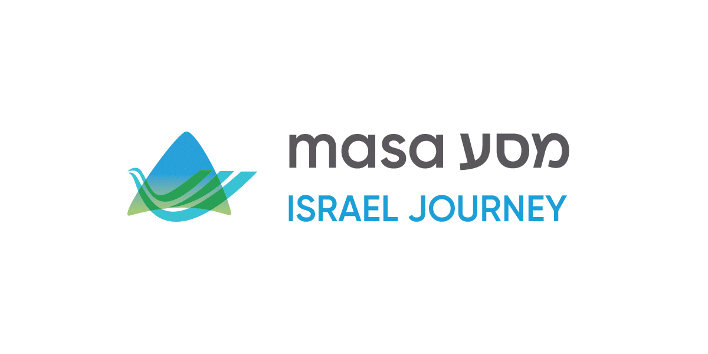

Estudia en Israel con Masa
Masa Academic Fellows son jóvenes adultos de entre 18 y 30 años que vienen a estudiar a Israel para mejorar su educación, generar una red fortalecida y avanzar hacia su futuro. Estudia en el exterior por un semestre o más en una de las universidades de élite realizando una carrera de grado o posgrado. Masa ofrece becas y subsidios generosos para sus estudios en Israel, así como la oportunidad de ser parte de la Comunidad Masa: ¡únete a workshops, seminarios de liderazgo, mega-eventos y más durante tu experiencia!
Estudiar en una universidad Israelí te ayudará a desarrollar habilidades y te encontrarás con experiencias de la vida real que van más allá de lo que puede darte un aula de clase. Realiza cursos distintos a los que puedes hacer en tus universidades locales y mejora tu diploma y tu futura carrera. Tu experiencia viviendo y estudiando en Israel, sumergiéndote en una cultura distinta y adquiriendo otro idioma va darte un gran valor agregado para tu inserción laboral, así como herramientas y conexiones que durarán por siempre.
pagina web: https://www.masaisrael.org